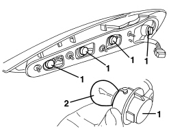

5540A50 BULB FOR REAR LIGHT CLUSTER (ONE), LEFT OR RIGHT - REPLACE
- Path
- Procedures > 55 ELECTRICAL EQUIPMENT > 5540 EXTERIOR LIGHTING > 5540A LIGHTING > 5540A50 BULB FOR REAR LIGHT CLUSTER (ONE), LEFT OR RIGHT - REPLACE
- Kind
- repair procedure (removal / refitting; the operation number is the code)
- Applies to
- all engines; all production periods
- Interactive page
- https://sloeber94.github.io/elrnDB-aBrrSpdr/en/#/946002384
Applies to: all engines; all production periods
 Removing
Removing
 Refitting
RefittingOp. 5540A44 REAR LIGHT CLUSTER (ONE), LEFT OR RIGHT - R.R.
1. Extract the bulb holder from the housing (bayonet fitting).
2. Remove the bulb from the bulb holder (bayonet fitting).

Applies to: all engines; all production periods
Refitting
Removing- Check that the bulb is working.
- Fit the bulb in the bulb holder (bayonet fitting).
- Fit the bulb holder in place (bayonet fitting).